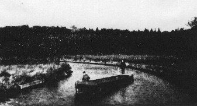
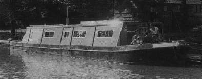

DVBRIS
Dvbris is now an all steel 54 foot narrowboat, which until June 2003 was fitted with a 1967 Lister SR2 and hydraulic gearbox. She now has a Perkins 4.108 marine engine with an 18" propeller. Dvbris has an unusual hull, as she has got a 9 inch keel.
As our families have started to grow, we needed more space or an additional boat. We decided to go for the 'cheaper' option and have a stretch job done. To see more about the stretch job click here or on the relevant side button.
For more of her history read on below.
AT THE BEGINNING
|  |
Dvbris (Miranda) on her voyage to be fitted out. |
| Photograph by courtesy of The Wyvern Shipping Company. |
Our boat was built in 1967 for The Wyvern Shipping Company as a hire boat. She was originally named 'Miranda' with a wooden super structure. She served as a hire boat for a number of years until she retired in 1975, and was subsequently sold off. Not long after a fire gutted her. In the early 80's she was fitted with a steel top (we think that this added weight has reduced her speed and made her more difficult to stop - do any of you have other theories?). Anyway, with this new top she was renamed 'Saville Row'.
In 1995 we (2 families) purchased 'Saville Row' as a major project and floating holiday home.
| Dvbris (Miranda) on her maiden voyage as a hire boat for Wyvern Shipping Company. |  |
| Photograph by courtesy of The Wyvern Shipping Company. |